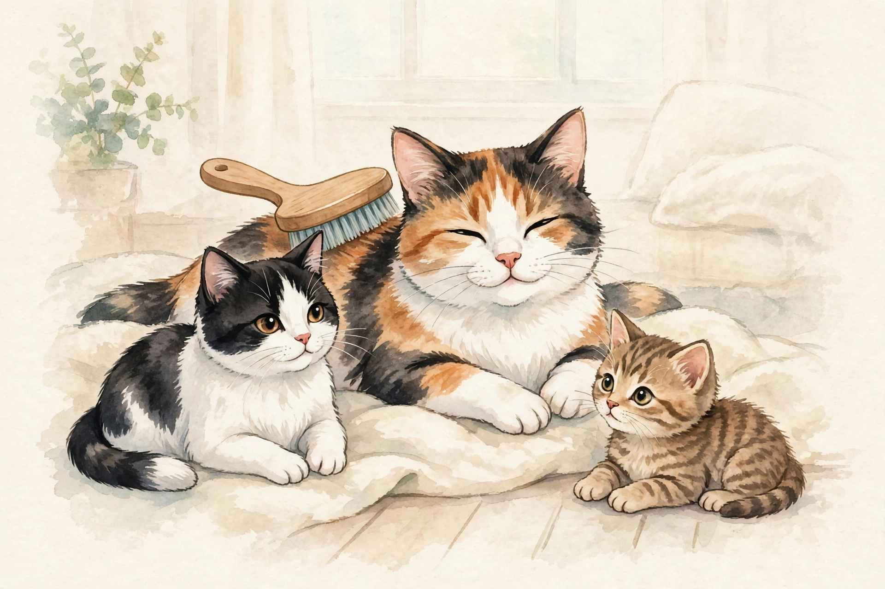

猫のペットケアコーナー
猫と暮らす毎日のケアをまとめたコーナーです。食事と水、トイレ、ブラッシング、歯のお手入れ、爪とぎといった、日々の暮らしの中で飼い主さんができる工夫を紹介します。このコーナーは一般的な飼育・ケアの情報で、病気の診断や治療のためのものではありません。体調に気になる変化があるときは、動物病院に相談してください。

毎日のケアの基本
食事と水
主食は「総合栄養食」と表示のあるフードを基本に、年齢や暮らし方に合ったものを選ぶのが目安です。新しいフードへ切り替えるときは、今までのフードに少しずつ混ぜて、数日かけて慣らしていきます。水はいつでも新鮮なものが飲めるように、器は毎日洗って水を取り替えます。食欲や飲水量の変化は体調を見る手がかりにもなるので、いつもの量をなんとなくでも覚えておくと安心です。
トイレ
トイレは静かで落ち着ける場所に置き、汚れたらこまめに掃除します。砂の種類や粒の大きさの好みは猫によって違うので、使ってくれないときは砂やトイレの形を変えてみるのも一つの方法です。トイレの回数・量・様子がいつもと違う状態が続くときは、早めに動物病院へ相談してください。
ブラッシング（グルーミング）
ブラッシングは抜け毛や毛玉のケアに役立ち、皮膚や被毛の様子を見る機会にもなります。最初は短い時間から、猫が嫌がる前に切り上げるのが続けるコツです。力を入れすぎず、皮膚にブラシを強く当てないようにします。長毛の猫は毛玉ができやすいので、脇やお腹まわりも忘れずに。
歯のお手入れ
歯のケアは、歯みがきシートや猫用の歯ブラシで少しずつ慣らしていくのが基本です。口を触られるのを嫌がる猫は多いので、最初は口のまわりを触ることから始めて、できたらほめる、を繰り返します。口臭が強い、食べにくそうにしている、よだれが増えたといった様子が続くときは、動物病院で口の中を見てもらってください。
爪とぎと遊び
爪とぎは猫の自然な行動です。家具で研がれて困るときは、猫の通り道や寝起きによくいる場所に爪とぎを置くと、そちらを使ってもらいやすくなります。段ボール、麻、木など素材の好みは猫それぞれです。遊びの時間は運動不足の解消にもなります。短い時間でも、毎日続ける方が猫の満足につながります。
大切な注意
- 精油（アロマオイル）は猫に使わないでください。猫は精油の成分を体の中で分解するのが苦手で、皮膚につけたり舐めたりすると体調を崩すおそれがあります。飼い主さんがアロマを楽しむときも、猫がいる部屋での使用は控えめにし、換気をして、猫が精油の原液やディフューザーの水に触れられないようにしてください。
- 食欲がない、元気がない、水を飲む量が急に増えた、トイレの様子がいつもと違う、といった変化が続くときは、様子見を長引かせず、早めに動物病院へ相談してください。
- フードや用品は、猫の年齢・体調・アレルギーの有無に合わせて選んでください。迷うときは、かかりつけの動物病院に相談するのが安心です。
猫の悩みから探す
- 抜け毛や毛玉が気になる → 猫のブラッシングの基本｜嫌がられない始め方とブラシの選び方
- 口臭や歯の汚れが気になる → 猫の歯みがきの始め方｜シートから慣らす手順
- 家具で爪を研いで困っている → 猫の爪とぎの置き場所と素材の選び方
- トイレの砂選びで迷う、においが気になる → 猫のトイレの砂の選び方｜紙・木・鉱物などの種類と好みの見方
- フードの切り替え方や食いつきが気になる → 猫の食事の基本｜ドライとウェットの使い分けと切り替え方
カテゴリから選ぶ
毎日のケアの場面ごとに、おすすめ用品と読み物をまとめました。迷ったら「まずこれ」の1点からどうぞ。
食事のおすすめ用品（PR）
主食は総合栄養食が基本です。ドライを軸に、ウェットで水分もとれる組み合わせが続けやすい形です。


※このカテゴリの商品リンクは楽天アフィリエイトによる広告リンクです。価格や在庫は販売ページでご確認ください。
トイレのおすすめ用品（PR）
砂は猫の好みが最優先です。紙の砂は軽くて扱いやすく、ニャンともシートは専用システムトイレ向けの専用品です。

エステー ニャンとも清潔トイレ 脱臭・抗菌シート 12枚×4袋（ケース）
「ニャンとも清潔トイレ」専用のシート（45×35cm）です。専用システムトイレの下段トレーに敷いて使うもので、他のトイレ用ではありません。ケース販売で、まとめ買い向けです。
→ 猫のトイレの砂の選び方｜紙・木・鉱物などの種類と好みの見方
※このカテゴリの商品リンクは楽天アフィリエイトによる広告リンクです。価格や在庫は販売ページでご確認ください。
お手入れのおすすめ用品（PR）
ブラッシングと歯のケアは、短い時間から少しずつ慣らすのが基本です。入口はスリッカーブラシと歯みがきシートです。


※このカテゴリの商品リンクは楽天アフィリエイトによる広告リンクです。価格や在庫は販売ページでご確認ください。
爪とぎのおすすめ用品（PR）
爪とぎは猫の通り道や寝起きの場所に置くのがコツです。段ボールと麻巻き、素材の違う2タイプを用意しました。


※このカテゴリの商品リンクは楽天アフィリエイトによる広告リンクです。価格や在庫は販売ページでご確認ください。
猫のLINEスタンプ
このサイトの運営者（222キャラ工房）が作っている、猫のLINEスタンプです。毎日の連絡にどうぞ。
飼い主さんのセルフケアも
猫のお世話で同じ姿勢が続いた日は、飼い主さんの体も休めてください。資料ライブラリには、人のセルフケア資料もそろっています。